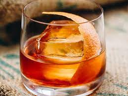

Old Fashioned

A smoky, sweet, caramel-y drink.
Ingredients:
- 1 teaspoon sugar
- 3 dashes Angostura bitters
- 1 teaspoon water
- 2 oz bourbon
- orange twist
Directions:
- Add the sugar and bitters into a mixing glass, then add the water,
and stir until the sugar is nearly dissolved.
- Fille the mixing glass with ice, add bourbon, stir.
- Strain into a rocks glass over one large ice cube.
- Express the oil of an orange twist over the glass.